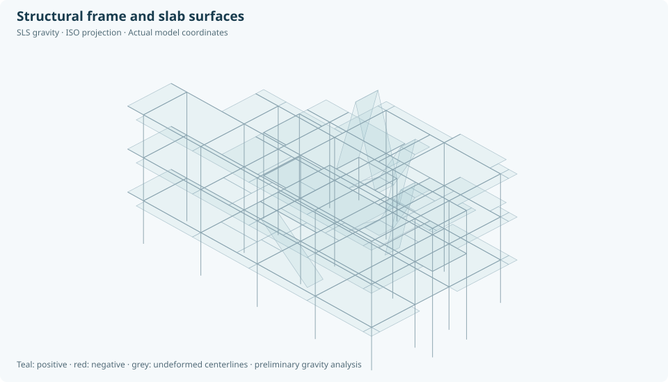

RESIDENTIAL STRUCTURES / REINFORCED CONCRETE
Narayani
Parajuli
Structural behaviour, member design and material quantities for a three-level reinforced concrete residence.
Design study · frame-based analysis.

3Levels
165Frame objects
115Load surfaces
21Foundation footprints
STRUCTURAL RESPONSE
Geometry and load path
Two storey-offset interpretations are compared. The downward-offset model gives a first period of 0.74041 s and a Type B equivalent-static base shear of 984.19 kN. The upward-offset reference gives 0.74358 s and 1,002.50 kN. These values depend on the assumed geometry, site spectrum and frame-based load transfer.
984.19 kNBase shear · downward offset
0.74041 sFirst period · downward offset
6,748.7 kNSeismic weight · downward offset
PROJECT CHAPTERS
Explore the structure
01Model & material quantities
Geometry, force diagrams, member actions and material schedules.
Explore section →02Member designSeismic demands, beam, column, slab and footing section assessments.
Explore section →03Dynamic responseModal participation, storey drift and frame–surface connectivity.
Explore section →04Foundations & geometryElevation alternatives, structural response and foundation footprints.
Explore section →